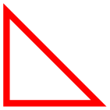
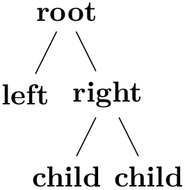
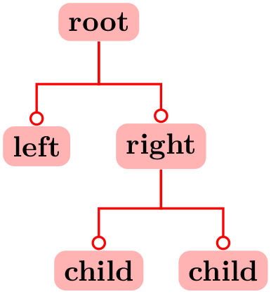
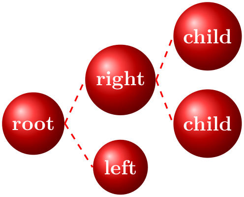
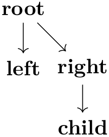
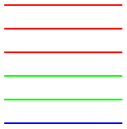

The TikZ and PGF Packages
Manual for version 3.1.9a
TikZ
11 Design Principles
This section describes the design principles behind the TikZ frontend, where TikZ means “TikZ ist kein Zeichenprogramm”. To use TikZ, as a LaTeX user say \usepackage{tikz} somewhere in the preamble, as a plain TeX user say \input tikz.tex. TikZ’s job is to make your life easier by providing an easy-to-learn and easy-to-use syntax for describing graphics.
The commands and syntax of TikZ were influenced by several sources. The basic command names and the notion of path operations is taken from metafont, the option mechanism comes from pstricks, the notion of styles is reminiscent of svg, the graph syntax is taken from graphviz. To make it all work together, some compromises were necessary. I also added some ideas of my own, like coordinate transformations.
The following basic design principles underlie TikZ:
-
1. Special syntax for specifying points.
-
2. Special syntax for path specifications.
-
3. Actions on paths.
-
4. Key–value syntax for graphic parameters.
-
5. Special syntax for nodes.
-
6. Special syntax for trees.
-
7. Special syntax for graphs.
-
8. Grouping of graphic parameters.
-
9. Coordinate transformation system.
11.1 Special Syntax For Specifying Points¶
TikZ provides a special syntax for specifying points and coordinates. In the simplest case, you provide two TeX dimensions, separated by commas, in round brackets as in (1cm,2pt).
You can also specify a point in polar coordinates by using a colon instead of a comma as in (30:1cm), which means “1cm in a 30 degrees direction”.
If you do not provide a unit, as in (2,1), you specify a point in pgf’s \(xy\)-coordinate system. By default, the unit \(x\)-vector goes 1cm to the right and the unit \(y\)-vector goes 1cm upward.
By specifying three numbers as in (1,1,1) you specify a point in pgf’s \(xyz\)-coordinate system.
It is also possible to use an anchor of a previously defined shape as in (first node.south).
You can add two plus signs before a coordinate as in ++(1cm,0pt). This means “1cm to the right of the last point used”. This allows you to easily specify relative movements. For example, (1,0) ++(1,0) ++(0,1) specifies the three coordinates (1,0), then (2,0), and (2,1).
Finally, instead of two plus signs, you can also add a single one. This also specifies a point in a relative manner, but it does not “change” the current point used in subsequent relative commands. For example, (1,0) +(1,0) +(0,1) specifies the three coordinates (1,0), then (2,0), and (1,1).
11.2 Special Syntax For Path Specifications¶
When creating a picture using TikZ, your main job is the specification of paths. A path is a series of straight or curved lines, which need not be connected. TikZ makes it easy to specify paths, partly using the syntax of metapost. For example, to specify a triangular path you use
and you get when you draw this path.
11.3 Actions on Paths¶
A path is just a series of straight and curved lines, but it is not yet specified what should happen with it. One can draw a path, fill a path, shade it, clip it, or do any combination of these. Drawing (also known as stroking) can be thought of as taking a pen of a certain thickness and moving it along the path, thereby drawing on the canvas. Filling means that the interior of the path is filled with a uniform color. Obviously, filling makes sense only for closed paths and a path is automatically closed prior to filling, if necessary.
Given a path as in \path (0,0) rectangle (2ex,1ex);, you can draw it by adding the draw option as in \path[draw] (0,0) rectangle (2ex,1ex);, which yields . The \draw command is just an abbreviation for \path[draw]. To fill a path, use the fill option or the \fill command, which is an abbreviation for \path[fill]. The \filldraw command is an abbreviation for \path[fill,draw]. Shading is caused by the shade option (there are \shade and \shadedraw abbreviations) and clipping by the clip option. There is also a \clip command, which does the same as \path[clip], but not commands like \drawclip. Use, say, \draw[clip] or \path[draw,clip] instead.
All of these commands can only be used inside {tikzpicture} environments.
TikZ allows you to use different colors for filling and stroking.
11.4 Key–Value Syntax for Graphic Parameters¶
Whenever TikZ draws or fills a path, a large number of graphic parameters influences the rendering. Examples include the colors used, the dashing pattern, the clipping area, the line width, and many others. In TikZ, all these options are specified as lists of so called key–value pairs, as in color=red, that are passed as optional parameters to the path drawing and filling commands. This usage is similar to pstricks. For example, the following will draw a thick, red triangle;

11.5 Special Syntax for Specifying Nodes¶
TikZ introduces a special syntax for adding text or, more generally, nodes to a graphic. When you specify a path, add nodes as in the following example:

Nodes are inserted at the current position of the path, but either after (the default) or before the complete path is rendered. When special options are given, as in \draw (1,1) node[circle,draw] {text};, the text is not just put at the current position. Rather, it is surrounded by a circle and this circle is “drawn”.
You can add a name to a node for later reference either by using the option name=⟨node name⟩ or by stating the node name in parentheses outside the text as in node[circle](name){text}.
Predefined shapes include rectangle, circle, and ellipse, but it is possible (though a bit challenging) to define new shapes.
11.6 Special Syntax for Specifying Trees¶
The “node syntax” can also be used to draw tress: A node can be followed by any number of children, each introduced by the keyword child. The children are nodes themselves, each of which may have children in turn.

Since trees are made up from nodes, it is possible to use options to modify the way trees are drawn. Here are two examples of the above tree, redrawn with different options:

\usetikzlibrary {arrows.meta,trees}
\begin{tikzpicture}
[edge from parent fork down, sibling distance=15mm, level distance=15mm,
every node/.style={fill=red!30,rounded corners},
edge from parent/.style={red,-{Circle[open]},thick,draw}]
\node {root}
child
{node
{left}}
child
{node
{right}
child
{node
{child}}
child
{node
{child}}
};
\end{tikzpicture}

\begin{tikzpicture}
[parent anchor=east,child anchor=west,grow=east,
sibling distance=15mm, level distance=15mm,
every node/.style={ball color=red,circle,text=white},
edge from parent/.style={draw,dashed,thick,red}]
\node {root}
child
{node
{left}}
child
{node
{right}
child
{node
{child}}
child
{node
{child}}
};
\end{tikzpicture}
11.7 Special Syntax for Graphs¶
The \node command gives you fine control over where nodes should be placed, what text they should use, and what they should look like. However, when you draw a graph, you typically need to create numerous fairly similar nodes that only differ with respect to the name they show. In these cases, the graph syntax can be used, which is another syntax layer build “on top” of the node syntax.

The syntax of the graph command extends the so-called dot-notation used in the popular graphviz program.
Depending on the version of TeX you use (it must allow you to call Lua code, which is the case for LuaTeX), you can also ask TikZ to do automatically compute good positions for the nodes of a graph using one of several integrated graph drawing algorithms.
11.8 Grouping of Graphic Parameters¶
Graphic parameters should often apply to several path drawing or filling commands. For example, we may wish to draw numerous lines all with the same line width of 1pt. For this, we put these commands in a {scope} environment that takes the desired graphic options as an optional parameter. Naturally, the specified graphic parameters apply only to the drawing and filling commands inside the environment. Furthermore, nested {scope} environments or individual drawing commands can override the graphic parameters of outer {scope} environments. In the following example, three red lines, two green lines, and one blue line are drawn:

\begin{tikzpicture}
\begin{scope}[color=red]
\draw (0mm,10mm) --
(10mm,10mm);
\draw (0mm, 8mm) --
(10mm, 8mm);
\draw (0mm, 6mm) --
(10mm, 6mm);
\end{scope}
\begin{scope}[color=green]
\draw (0mm, 4mm) --
(10mm, 4mm);
\draw (0mm, 2mm) --
(10mm, 2mm);
\draw[color=blue] (0mm, 0mm) --
(10mm, 0mm);
\end{scope}
\end{tikzpicture}
The {tikzpicture} environment itself also behaves like a {scope} environment, that is, you can specify graphic parameters using an optional argument. These optional apply to all commands in the picture.
11.9 Coordinate Transformation System¶
TikZ supports both pgf’s coordinate transformation system to perform transformations as well as canvas transformations, a more low-level transformation system. (For details on the difference between coordinate transformations and canvas transformations see Section 98.4.)
The syntax is set up in such a way that it is harder to use canvas transformations than coordinate transformations. There are two reasons for this: First, the canvas transformation must be used with great care and often results in “bad” graphics with changing line width and text in wrong sizes. Second, pgf loses track of where nodes and shapes are positioned when canvas transformations are used. So, in almost all circumstances, you should use coordinate transformations rather than canvas transformations.